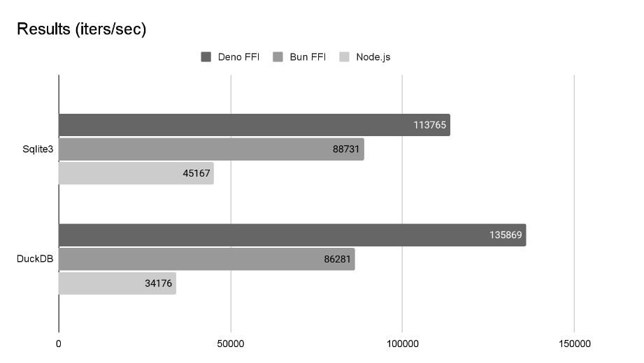
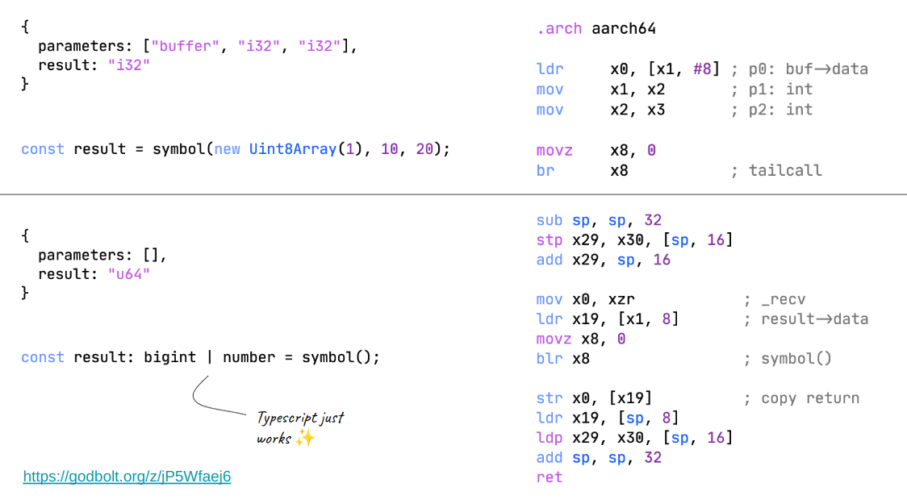

Divy Srivastava
In this post, we will explore the lesser known optimization in Deno that makes FFI fast.
V8 Isolates are little sandboxes that run JS. JavaScript runtimes give you the ability to call native functions by reaching out of this sandbox. These native functions are often referred to as “bindings”.
Optimizing these bindings are one of the most important optimizations in a JavaScript runtime. Over the years, V8 has made significant improvements in this area to make bindings faster for embedders.
Let’s look at an example of a V8 C++ binding:
void Add(const FunctionCallbackInfo<Value>& args) {
Isolate* isolate = args.GetIsolate();
// Check the number of arguments passed.
if (args.Length() < 2) {
isolate->ThrowException(Exception::TypeError(
String::NewFromUtf8(isolate, "Wrong number of arguments", NewStringType::kNormal).ToLocalChecked()));
return;
}
// Check the argument types
if (!args[0]->IsNumber() || !args[1]->IsNumber()) {
isolate->ThrowException(Exception::TypeError(
String::NewFromUtf8(isolate, "Wrong arguments", NewStringType::kNormal).ToLocalChecked()));
return;
}
// Convert the arguments to numbers.
double value = args[0]->NumberValue(isolate) + args[1]->NumberValue(isolate);
// Create a new Number value and set it as the return value.
Local<Number> num = Number::New(isolate, value);
args.GetReturnValue().Set(num);
}This does a bunch of stuff, like checking the number of arguments, type checking, converting arguments and setting the return value. Moreover, V8 has to jump through (quite literally) a lot of hoops to make this work. It sets up guards and jumps out of the optimized JIT code to the runtime.
What if there was a way to call bindings without moving out of the optimized JIT code and without all the type checks?
V8 Fast calls are a relatively new optimization in V8.
V8 can call our native binding directly from the optimized JIT code if we provide it with the necessary type information. The necessary typechecks happen in the compiler itself including fallback to the slow path.
int FastAdd(int a, int b);
// Extracts type information from the function signature
v8::CFunction fast_add = MakeV8CFunction(FastAdd);This results in massive speedups for repetitve native calls from optimized JavaScript. The calls are inlined and theoretically as fast as calling a native function.
Apart from native runtime bindings, one of the most common places where this optimization is used is in FFI (Foreign Function Interface) calls.
const { symbols } = Deno.dlopen("libc.6.so", {
open: {
parameters: ["buffer", "i32"],
result: "i32",
},
});Deno.dlopen is the API to open a dynamic library. Notice
anything familiar? We are defining the number of arguments, types and
the return value.
We could use this information to generate optimized native binding and give it to V8!
Deno created a tiny assembler (in Rust ofc) to generate optimized bindings for FFI calls based on the type information.
Deno.dlopen("libtest.so", {
func: {
parameters: ["buffer", "i32", "i32"],
result: "i32",
},
});Turbocall generates the following bindings:
.arch aarch64
ldr x0, [x1, #8] ; buffer->data
mov x1, x2 ; a
mov x2, x3 ; b
moxz x8, 0
br x8 ; tailcallThis is simply ARM64 assembly for something like this in C:
int func_trampoline(void* _this, FastApiTypedArray* buffer, int a, int b) {
return func(buffer->data, a, b);
}Most notably, it generates code to properly pass JS typed arrays and arguments to the native FFI symbol.
I gave a talk on this topic at the DenoFest Meetup in Tokyo2 which goes into more detail about the implementation.
This made FFI calls 100x faster in Deno: https://github.com/denoland/deno/pull/15125
Let’s see how this compares against other runtimes.
 Benchmark comparing Deno, Bun and Node.js on Sqlite and DuckDB
This is running sqlite3 and duckdb benchmarks on Deno, Bun and Node.js. See benchmark source.3
Slide from the DenoFest talk:
 Turbocall slide
It will be interesting to see how Static Hermes4 will compare against V8 fast calls. Both can probably generate similar code at runtime but implemented very differently.
I’m also excited about just-js/lo5
which is a WIP low-level JS runtime that aims to generate V8 fast calls
bindings ahead-of-time (similar to Deno) but also allow for a more
engine-agnostic design where you could swap out V8 for other engines
like Hermes, Quickjs.
That’s it! Feel free to follow me on Twitter: https://twitter.com/undefined_void
This document is available as PDF: https://littledivy.com/turbocall.pdf